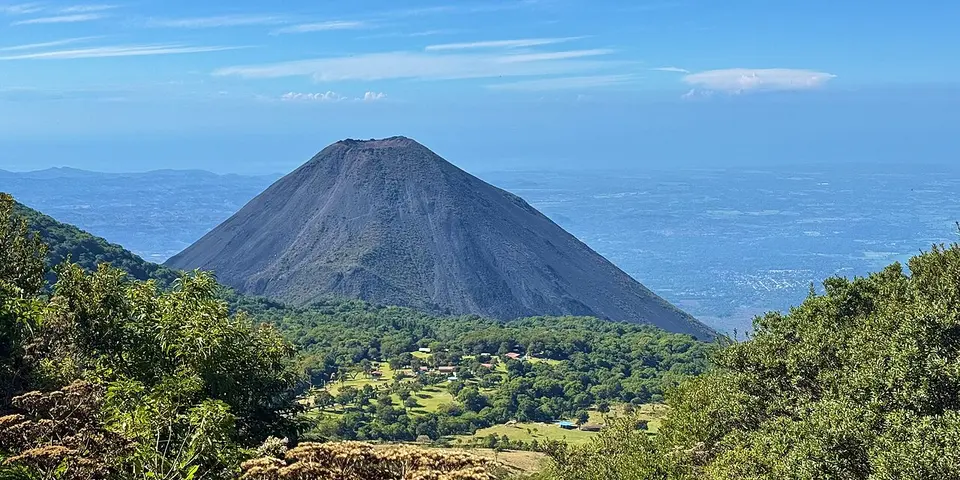

Central America & Caribbean
El Salvador on a budget
Surf beaches, volcano hikes and pupusas on every corner, in a small, cheap country that is now much safer than its reputation.
Photo: Dead.rabbit, CC BY-SA 4.0, via Wikimedia Commons

Classic route
San Salvador, the Ruta de las Flores and El Tunco. 1 week.
Before you go
Flights to El Tunco: Skyscanner · Kiwi.com · Google Flights
Hostels and guesthouses in El Tunco · Ruta de las Flores · Lake Coatepeque · Santa Ana
Tours and tickets: El Tunco · Ruta de las Flores
Mobile data: El Salvador eSIM
Travel insurance: SafetyWing
How much 10 places in El Salvador cost
Daily budgets per person in US dollars: a hostel dorm or simple guesthouse, local food, local transport and the usual entry fees.
-
El Tunco
Black-sand surf town on the Pacific with famous sunsets behind its rock formation, cheap hostels and lively beach bars.
Bed $15 · Food $10 · Getting around $3 · Extras $6
Budget tip: Board rental costs about $10 a day. Beginners can find gentler waves at nearby El Sunzal.
$34per day -
Ruta de las Flores
Mural-covered coffee towns like Juayúa and Ataco, waterfall hikes and a weekend food festival full of grilled meats and pupusas.
Bed $14 · Food $9 · Getting around $3 · Extras $4
Budget tip: Juayúa's food festival runs every weekend. Local buses link the towns for very little, so skip the tour van.
$30per day -
Lake Coatepeque
A deep blue crater lake where you jump off wooden docks into the water and stay in lakeside hostels.
Bed $15 · Food $10 · Getting around $4 · Extras $3
Budget tip: Local buses run from Santa Ana. Bring snacks and drinks, as the lakeside restaurants are pricey.
$32per day -
Santa Ana
A Gothic cathedral, a grand old theater and the base for hiking Santa Ana volcano to its sulfur-green crater lake.
Bed $14 · Food $9 · Getting around $3 · Extras $5
Budget tip: The volcano hike starts from Cerro Verde with a required guide, usually in the morning. Bring cash for the park and guide fees.
$31per day -
Perquín
A pine-covered mountain town with a moving civil war museum and the El Mozote massacre memorial nearby.
Bed $12 · Food $8 · Getting around $4 · Extras $3
Budget tip: Some museum guides are former guerrillas with first-hand stories. Visit El Mozote with a local guide and leave a tip.
$27per day -
Suchitoto
Cobbled colonial streets above Lake Suchitlán, with indigo-dyeing workshops and weekend food markets around the plaza.
Bed $14 · Food $9 · Getting around $3 · Extras $3
Budget tip: Take a cheap indigo-dyeing class and keep your scarf. Visit on a weekend for the food markets.
$29per day -
Joya de Cerén
UNESCO-listed farming village buried by volcanic ash, preserving everyday Maya homes, storage rooms and a sweat lodge.
Bed $15 · Food $10 · Getting around $3 · Extras $3
Budget tip: Combine with San Andrés ruins in one trip from San Salvador or Santa Ana; the site is small, so allow about two hours.
$31per day -
San Salvador
The capital's revived historic center, the Boquerón volcano crater and busy food courts serving piping-hot pupusas.
Bed $18 · Food $10 · Getting around $3 · Extras $3
Budget tip: Uber is cheap and safer than street taxis. Pupusas cost under a dollar each, so street food here is a real bargain.
$34per day -
El Zonte
Small surf town with right-hand point breaks, black sand coves and a strong bitcoin-using community along the Pacific coast.
Bed $16 · Food $10 · Getting around $3 · Extras $6
Budget tip: Stay in El Zonte rather than El Tunco for quieter, cheaper rooms; local buses along the coast road are very cheap.
$35per day -
El Imposible
Largest national park in El Salvador, with rugged forest trails, rivers and waterfall swimming in the western mountains.
Bed $14 · Food $9 · Getting around $6 · Extras $8
Budget tip: Hire a park guide at the entrance; staying at a nearby lodge saves on transport from the coast.
$37per day
Know before you go
El Salvador on a budget: the basics
Currency
El Salvador uses the US dollar
No exchange needed. Bring clean, untorn notes, since small shops often refuse damaged bills.
Getting around
Chicken buses are very cheap but slow, and tourist shuttles connect San Salvador, the Ruta de las Flores and El Tunco. Uber and inDrive work in San Salvador and are the easy way around the capital.
Where to sleep
El Tunco has many surf hostels and cheap guesthouses, and towns on the Ruta de las Flores like Juayúa and Ataco have small hostels.
What to eat
- Pupusas: thick corn tortillas stuffed with cheese, beans or pork
- Yuca frita: fried cassava with pork crackling and pickled cabbage
- Panes con pollo: sandwich of chicken stewed in tomato sauce
- Horchata: sweet rice and morro seed drink with cinnamon
Money
El Salvador uses the US dollar, so cards work in the capital but you should carry small bills for buses, pupuserías and beach towns. Tipping about 10% is common in restaurants.
Phone data
Claro and Tigo SIMs are cheap and easy to get with a passport, and coverage is good across this compact country.
Heads up
Rip currents are strong on many Pacific beaches, so swim only where locals do and ask surfers about conditions.
El Salvador travel: quick answers
How much does a day in El Salvador cost on a budget?
About $32 a day for one person, from $27 in Perquín to $37 in El Imposible. That covers a hostel dorm or simple guesthouse, local food, local transport and the usual entry fees, so a week runs about $224 before flights.
When is the best time to visit El Salvador?
November to April is the best time, with the most reliable weather for getting around.
What is the cheapest place to visit in El Salvador?
Perquín, at about $27 a day. A pine-covered mountain town with a moving civil war museum and the El Mozote massacre memorial nearby.
How long do you need in El Salvador?
San Salvador, the Ruta de las Flores and El Tunco. 1 week.
How do you get around El Salvador cheaply?
Chicken buses are very cheap but slow, and tourist shuttles connect San Salvador, the Ruta de las Flores and El Tunco. Uber and inDrive work in San Salvador and are the easy way around the capital.
What food should you try in El Salvador?
Pupusas, thick corn tortillas stuffed with cheese, beans or pork. Yuca frita, fried cassava with pork crackling and pickled cabbage. Panes con pollo, sandwich of chicken stewed in tomato sauce. Horchata, sweet rice and morro seed drink with cinnamon.
Planning around the seasons? See where to go in November, or compare the cheapest countries nearby.
Itineraries through El Salvador
- Copan to Costa Rica 24 days · $1,862
Similar budgets nearby
- Guatemala $33/day
- Nicaragua $28/day
- Dominican Republic $45/day
- Panama $46/day